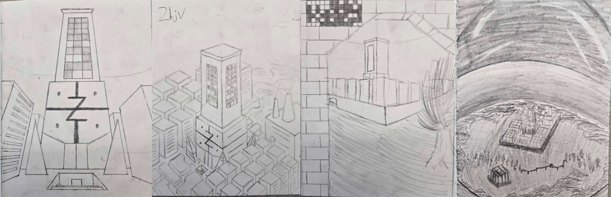

The Original Sketches VS The Final Product
This drawing was an assignment for the course FAS143 "Drawing I" which is a joined course between UTM and Sheridan College.

The goal of the assignment was to create some kind of environment and draw it from four different angles. I chose to create a small city underneath a dome like a snowglobe. The first angle was a close-up looking at the main building in the centre. The second angle was an isometric view of the centre of the city. The third angle was a distant view of the city from behind a brick archway. The fourth angle was an aerial view of the city, capturing the entire island on which it exists as well as the dome enclosing it.

After planning out the drawing and creating the sketches, I used various types of graphite pencils to draw the final product.